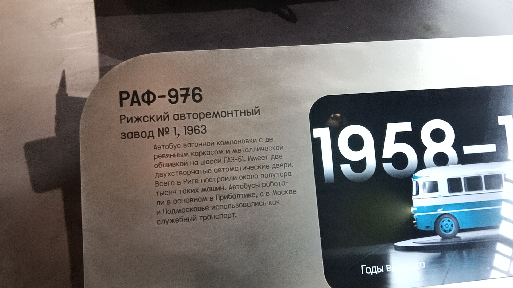
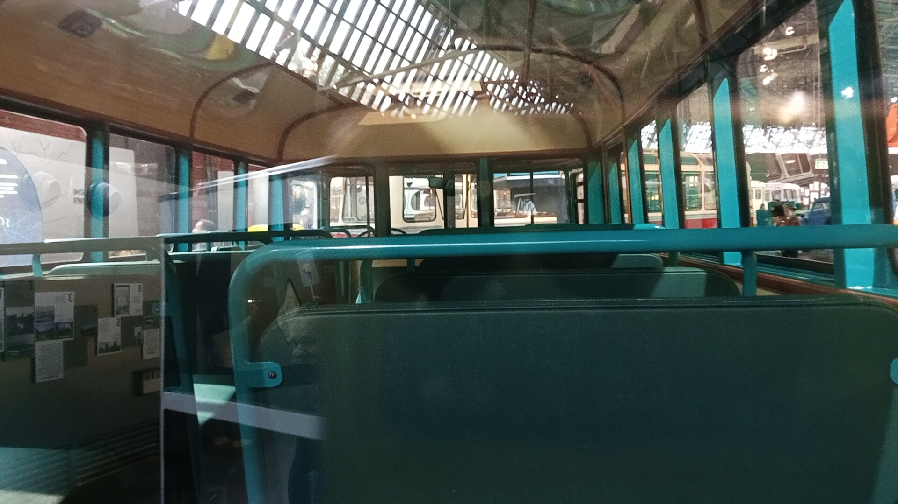

РАФ-976
РАФ-976 — советский автобус малого класса вагонной компоновки, выпускавшийся с 1958 по 1980 год. Представленный экземпляр был выпущен в 1963 году на Рижском авторемонтном заводе №1 и сейчас является частью коллекции Музея Транспорта Москвы.
Автобус имеет вагонную компоновку с деревянным каркасом и металлической обшивкой на шасси ГАЗ-51. Он оснащён двумя двухстворчатыми автоматическими дверями. Всего в Риге построили около полутора тысяч таких машин.
Общая информация об экспонате
🏭 Производство
Завод-изготовитель: Рижский авторемонтный завод №1
Модель: РАФ-976
Год выпуска: 1963
Всего выпущено: Около 1 500 машин
📍 Музейный статус
Местонахождение: Музей Транспорта Москвы
Состояние: Не эксплуатируется (музейный экспонат)
Назначение: Историческая экспозиция
Применение: Служебный транспорт в Москве и Подмосковье
⭐ Первый самостоятельный РАФ: РАФ-976 стал первой собственной моделью Рижского автобусного завода. Его создатель Лаймонис Клеге предложил взять панели автобуса ГЗА-651, удлинить лонжероны рамы, перенести вперёд рулевую колонку и педали и применить вагонную компоновку без отдельного капота.
Технические характеристики
Основные параметры
Длина: 6,696 м
Ширина: 2,45 м
Высота: 2,7 м
Сухая масса: 4040 кг
Максимальная скорость: 70 км/ч
Расход топлива: около 30 л/100 км
Силовая установка
Двигатель: ГАЗ-51, бензиновый
Цилиндры: 6, рядный
Мощность: 70 л.с.
Объём: 3485 см³
КПП: 4-ступенчатая механическая
Расположение: переднее, в кабине рядом с водителем
История модели и экспоната
Рождение модели
В начале 1950-х мощностей основных автозаводов СССР не хватало. Решение нашли в постройке простейших капотных автобусов на шасси ГАЗ-51. В Латвии первые такие автобусы сделали в 1954 году. Заслуга в создании новой модели принадлежала инженеру Лаймонису Клеге.
РАФ-251 — первый «рафик»
Модель была рекомендована к производству с января 1955 года. За первый год изготовили всего 54 автобуса при плане в 206.
Новый индекс — 976
В 1959 году автобусу присвоили новый индекс — 976. РАФ как состоявшийся автопроизводитель получил собственный набор индексов.
Год выпуска экспоната
Именно эта машина сошла с конвейера Рижского авторемонтного завода №1 в 1963 году. Она застала эпоху, когда РАФ-976 был основным служебным транспортом.
Сохранение для истории
Данный экземпляр был отреставрирован и занял достойное место в экспозиции Музея Транспорта Москвы.
Фотогалерея

Экспонат Музея Транспорта Москвы.

Музейная информация.

Внутреннее убранство.
Нажмите на фото для увеличения
«Заслуга в создании новой модели в большей степени принадлежала инженеру завода Лаймонису Клеге. Он предложил, взяв за основу панели автобуса ГЗА-651, удлинить спереди и сзади лонжероны рамы, перенести вперёд рулевую колонку и педали и, применив вагонную компоновку без отдельного капота, получить тем самым уменьшенное подобие автобуса ЗИС-155».